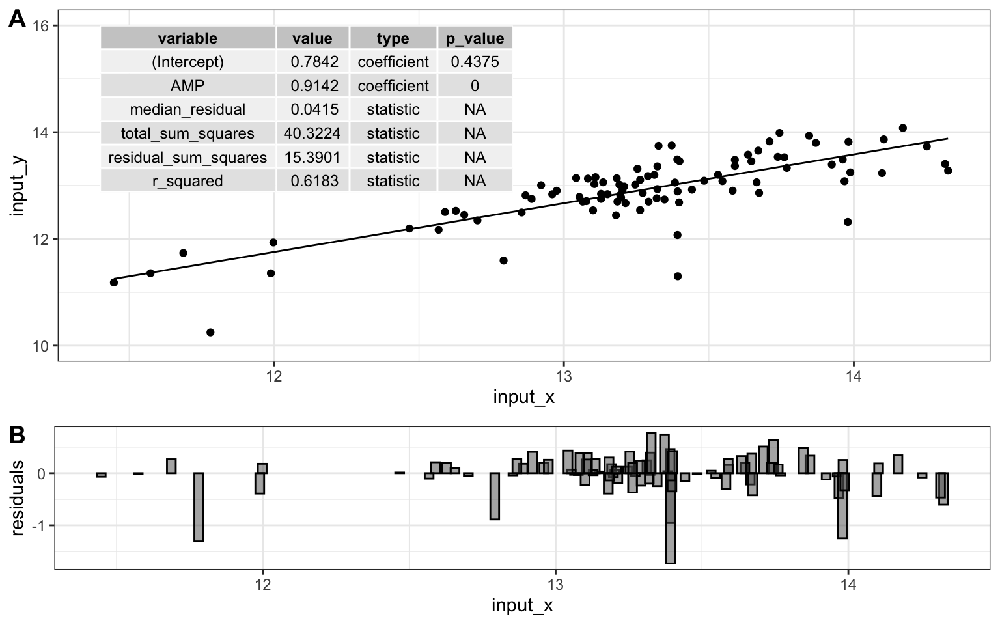

9 models
9.1 theory
Next on our quest to develop our abilities in analytical data exploration is modeling. We will start with some of the simplest models - linear models. There are a variety of ways to build linear models in R, but we will use a function called buildLinearModel. To use it, we simply give it our data, and tell it which to sets of values we want to compare. To tell it what we want to compare, we give it a formula in the form of Y = M x X + B, however, the B term and the M are implicit, so all we need to tell it is Y = X.
Let’s look at an example. Suppose we want to know if the abundances of ADP and AMP are related in our metabolomics dataset:
ggplot(metabolomics_data) +
geom_point(aes(x = AMP, y = ADP))
It looks like there might be a relationship! Let’s build a linear model for that relationship:
model <- buildLinearModel(
data = metabolomics_data,
formula = "ADP = AMP"
)
str(model, strict.width = "cut")
## List of 2
## $ metrics:'data.frame': 6 obs. of 4 variables:
## ..$ variable: chr [1:6] "(Intercept)" "AMP" "median_residual" "total_sum_sq"..
## ..$ value : num [1:6] 0.7842 0.9142 0.0415 40.3224 15.3901 ...
## ..$ type : chr [1:6] "coefficient" "coefficient" "statistic" "statistic" ..
## ..$ p_value : chr [1:6] "0.4375" "0" NA NA ...
## $ data :'data.frame': 92 obs. of 7 variables:
## ..$ input_x : num [1:92] 13.2 13.5 14.3 13.3 12 ...
## ..$ input_y : num [1:92] 12.8 13.1 13.3 13.2 11.9 ...
## ..$ ADP : num [1:92] 12.8 13.1 13.3 13.2 11.9 ...
## ..$ AMP : num [1:92] 13.2 13.5 14.3 13.3 12 ...
## ..$ residuals: num [1:92] 0.0312 -0.0217 -0.6014 0.2458 0.1806 ...
## ..$ model_y : num [1:92] 12.8 13.1 13.9 13 11.8 ...
## ..$ model_x : num [1:92] 13.2 13.5 14.3 13.3 12 ...The model consists of two thigs: metrics and data. Let’s look at the metrics:
model$metrics
## variable value type p_value
## 1 (Intercept) 0.7842 coefficient 0.4375
## 2 AMP 0.9142 coefficient 0
## 3 median_residual 0.0415 statistic <NA>
## 4 total_sum_squares 40.3224 statistic <NA>
## 5 residual_sum_squares 15.3901 statistic <NA>
## 6 r_squared 0.6183 statistic <NA>It shows us the intercept (b), the variable for AMP (i.e. the slope, m), as well some other things (we will talk about them in a second). The other thing the model contains is the data (below). This includes the input_x and y values. The raw values for ADP and AMP, the residuals (see below for details), and the x and y values generated by the model.
head(model$data)
## input_x input_y ADP AMP residuals model_y model_x
## 1 13.15029 12.83791 12.83791 13.15029 0.03119000 12.80672 13.15029
## 2 13.48362 13.08980 13.08980 13.48362 -0.02165141 13.11146 13.48362
## 3 14.32515 13.27943 13.27943 14.32515 -0.60138528 13.88082 14.32515
## 4 13.31191 13.20029 13.20029 13.31191 0.24581244 12.95448 13.31191
## 5 11.99764 11.93350 11.93350 11.99764 0.18057517 11.75293 11.99764
## 6 12.95966 12.83649 12.83649 12.95966 0.20405638 12.63243 12.95966Let’s plot the model!
ggplot(model$data) +
geom_point(aes(x = input_x, y = input_y)) +
geom_line(aes(x = model_x, y = model_y))Very good. Now let’s talk about evaluating the quality of our model. For this we need some means of assessing how well our line fits our data. We will use residuals - the distance between each of our points and our line.
ggplot(model$data) +
geom_point(aes(x = input_x, y = input_y)) +
geom_line(aes(x = model_x, y = model_y)) +
geom_segment(aes(x = input_x, y = input_y, xend = input_x, yend = model_y))
We can calculate the sum of the squared residuals:
sum(
(model$data$input_y - model$data$model_y)^2
, na.rm = TRUE)
## [1] 15.3901415.39! Let’s call that the “residual sum of the squares”. So. 15.39.. does that mean our model is good? I don’t know. We have to compare that number to something. Let’s compare it to a super simple model that is just defined by the mean y value of the input data.
ggplot(metabolomics_data) +
geom_point(aes(x = AMP, y = ADP)) +
geom_hline(aes(yintercept = mean(ADP, na.rm = TRUE)))A pretty bad model, I agree. How much better is our linear model that the flat line model? Let’s create a measure of the distance between each point and the point predicted for that same x value on the model:
sum(
(metabolomics_data$ADP - mean(metabolomics_data$ADP, na.rm = TRUE))^2
, na.rm = TRUE)
## [1] 40.32239
ggplot(metabolomics_data) +
geom_point(aes(x = AMP, y = ADP)) +
geom_hline(aes(yintercept = mean(ADP, na.rm = TRUE))) +
geom_segment(aes(x = AMP, y = ADP, xend = AMP, yend = mean(ADP, na.rm = TRUE)))
40.32! Wow. Let’s call that the “total sum of the squares”, and now we can compare that to our “residual sum of the squares”:
1-(15.39/40.32)
## [1] 0.61830360.68! Alright. That is our R squared value. It is equal to 1 minus the ratio of the “residual sum of the squares” to the “total sum of the squares”. Now, let’s put it all together and make it pretty:
top <- ggplot(model$data) +
geom_point(aes(x = input_x, y = input_y)) +
geom_line(aes(x = model_x, y = model_y)) +
annotate(geom = "table",
x = 11.4,
y = 16,
label = list(model$metrics)
) +
coord_cartesian(ylim = c(10,16)) +
theme_bw()
bottom <- ggplot(model$data) +
geom_col(
aes(x = input_x, y = residuals),
width = 0.03, color = "black", position = "dodge", alpha = 0.5
) +
theme_bw()
cowplot::plot_grid(top, bottom, ncol = 1, labels = "AUTO", rel_heights = c(2,1))
9.2 exercises
To practice creating linear models, try the following:
Choose one of the datasets we have used so far, and run a principal components analysis on it. Note that the output of the analysis when you run “pca_ord” contains the Dimension 1 coordinate “Dim.1” for each sample, as well as the abundance of each analyte in that sample.
Using the information from the ordination plot, identify two analytes: one that has a variance that is strongly and positively correlated with the first principal component (i.e. dimension 1), and one that has a variance that is slightly less strongly, but still positively correlated with the first principal component. Using
buildLinearModel, create and plot two linear models, one that regresses each of those analytes against dimension 1. Which has the greater r-squared value? Based on what you know about PCA, does that make sense?Choose two analytes: one should be one of the analytes from question 2 above, the other should be an analyte that, according to your PCA ordination analysis, is negatively correlated with the first principal component. Using
buildLinearModelcreate plots showing how those two analytes are correlated with dimension 1. One should be positively correlated, and the other negatively correlated. Enhance the plots by including in them a visual represetation of the residuals.